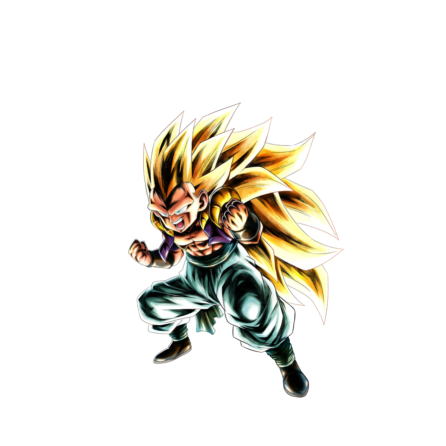

Dans tout Dragonball nous connaissons 3 types de fusions et nous n'en avons vu que 2. La premiere est la fusion métamole qui a été appris à Goku par le peuple Metamors, il y a certaines conditions avec cette fusion les personnes doivent avoir une taille et un ki a peu près similaire avec ces conditions reunis les personnes doivent effectuer une dance, avec cette fusion nous pouvons voir 2 nouveaux personnages, Gogeta la fusion de goku et vegeta et Gotenks la fusion de goten et de trunks. La seconde fusion est celle des boucles d'oreilles potaras, les potaras sont des objets appartenants aux dieux Kaio cela permet de fusionner en donnant chacun une boucle d'oreille, nous connaisons vegeto la fusion de Vegeta et de Goku, Zamasu qui est la fusion de 2 Zamasu, Kefla la fusion de Kale et Caulifla et Kibitoshi la fusion de 2 Kaio, le Kaio Shin et Kibito. En tout cas c'est fusion sont utilisé en dernier recours quand l'ennemi est beaucoup trop puissant.

Les fils de Vegeta et Goku ont une Fusion, vu pour la premiere fois contre Buu cette fusion leur donnant une grande puissance il n'a que les pires côtés de Son Goten et Trunks: ce qui fait de lui un guerrier égoïste, malpoli, prétentieux et énormément sûr de lui. Malgré tout cela c'est un guerrier qui a réussi à faire c'est preuve.
Des saiyans d'un autre univers plus exactement l'univers 6, ils sont comme des disciples à Goku et Vegeta, elles veulent elle aussi devenir plus puissant et parfait pour elle leurs "maitres" sont des hommes exceptionnels. Elles ont réussi à tenir tête a goku plein puissance mais bon c'étati pas assez suffissant contre les premices de l'Ultra-Instinct.